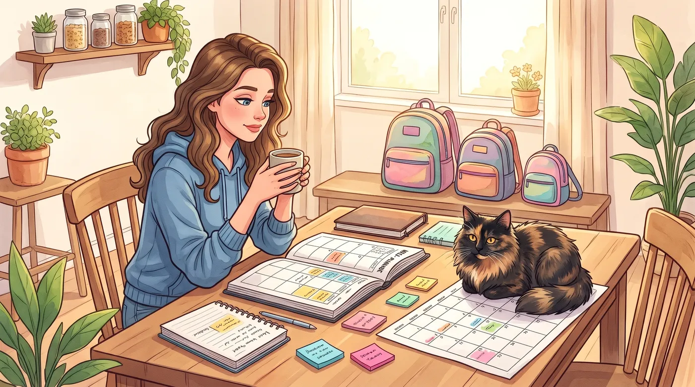
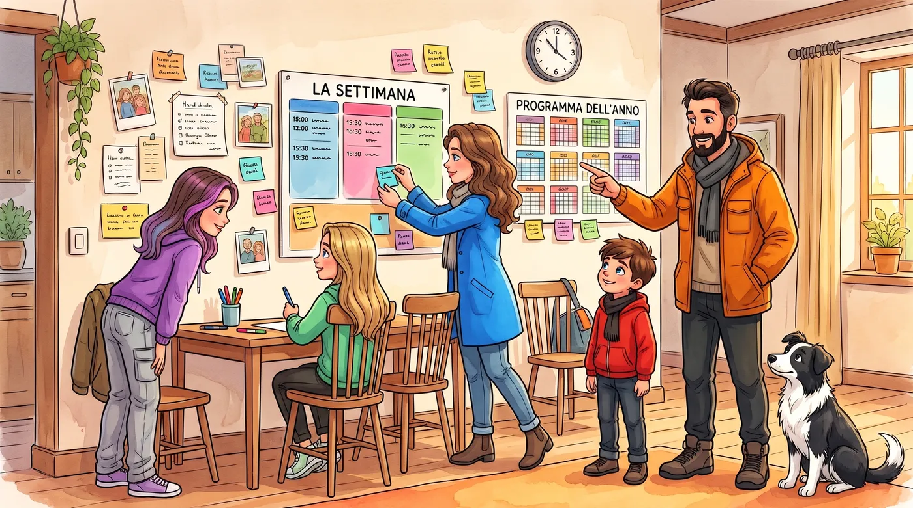
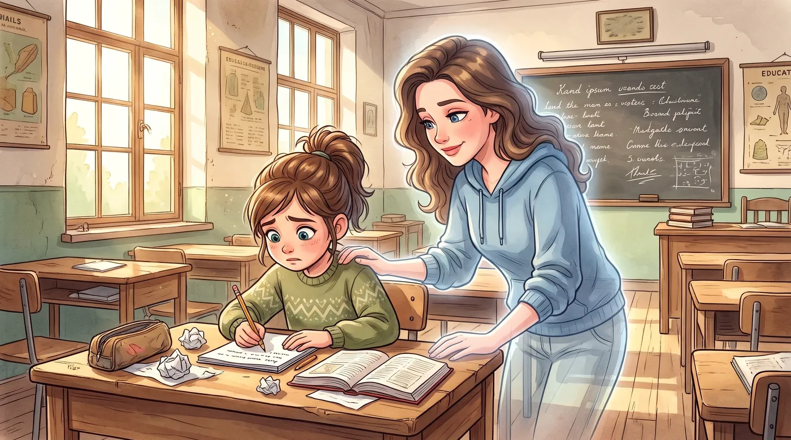
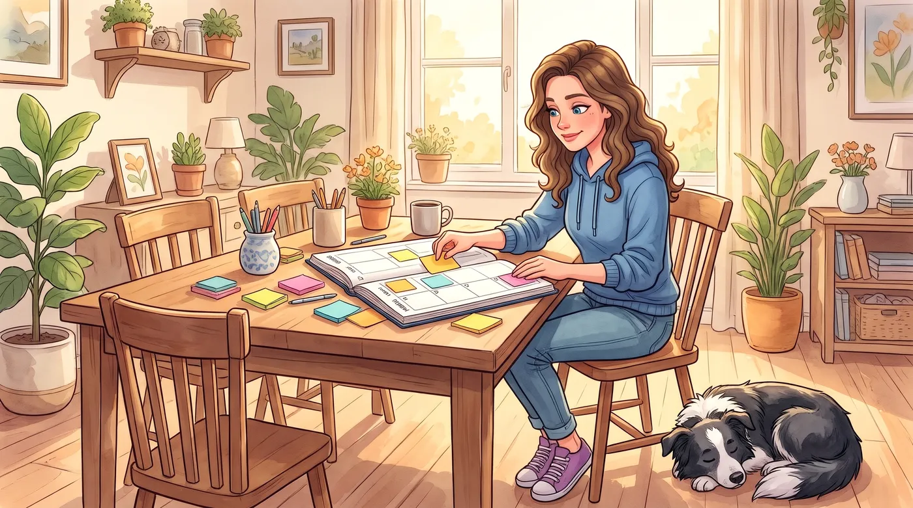
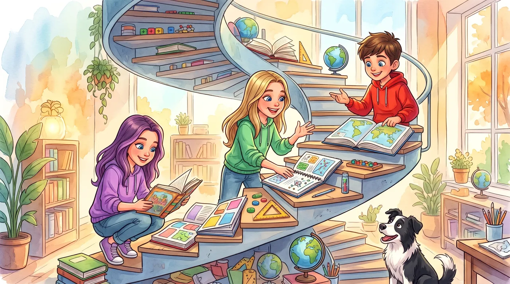

"Tanto voi fate scuola a casa: farete quello che volete, quando volete."
Me lo sento dire spesso, e capisco da dove viene. Vista da fuori, l'istruzione parentale sembra una lunga vacanza con qualche libro in giro.
La verità è che non ho mai pianificato tanto come da quando la scuola la facciamo in casa. Te l'avevo promesso: oggi ti racconto perché, e come.

Perché si pianifica, anche a casa
Il primo motivo è semplice. In casa abbiamo una terza primaria, una quinta primaria e una seconda media. Sono tre programmi diversi, e le ore della giornata restano ventiquattro.
Il secondo motivo arriva a fine anno e si chiama esame di idoneità. Chi fa istruzione parentale lo sostiene ogni anno, e lo sostiene sul progetto didattico che ha presentato la famiglia. Quello che scrivo nel progetto, insomma, poi lo dobbiamo fare davvero.
Il terzo motivo è quello a cui tengo di più. La libertà di chi fa scuola a casa è poter scegliere come e quando. Ma per scegliere come e quando bisogna sapere che cosa. Posso decidere che domani si va al museo proprio perché so con precisione che cosa sto spostando, e dove andrà a finire.
Senza un piano la libertà dura una settimana. Poi diventa ansia.
Com'è fatto, e dove sta
Il mio planner non è un oggetto solo. È un po' di tutto.
Da una parte c'è il programma dell'anno, con gli argomenti dal primo all'ultimo: è quello che a settembre guardiamo tutti insieme. Dall'altra c'è la settimana, con quello che tocca a ognuno, giorno per giorno. E poi ci sono i foglietti. Tanti. In giro.
Dentro la giornata ognuno ha il suo turno con me, sempre alla stessa ora. Il turno fisso è la cosa che regge tutto il resto. Ognuno sa quando tocca a lui, e sa che in quel tempo io ci sono solo per lui.

A chi serve davvero
Te lo dico chiaro: il planner serve a me, prima che ai miei figli.
Serve a me perché tre programmi, in una testa sola, non ci stanno. Mi serve la mattina, per sapere che cosa c'è da fare senza doverlo decidere ogni volta da capo. E mi serve per guardare lontano, e capire se la strada che abbiamo davanti è ancora quella giusta.
Per loro non deve diventare una gabbia. Un bambino non ha bisogno di sapere se siamo alla pagina prevista. Ha bisogno di capire quello che sta facendo, e di avere il tempo per farlo.
E quando salta?
Perché salta, eccome. Basta poco: un raffreddore, una settimana storta, un argomento che chiede più tempo di quello che gli avevo dato.
Quando restiamo indietro, la prima cosa che faccio è arrabbiarmi. La seconda è usare uno dei giorni cuscinetto. La terza è riscrivere il planner. Mi piacerebbe raccontarti che l'ordine è un altro, ma sarebbe una bugia, e tu te ne accorgeresti.
Quella rabbia con i miei figli non c'entra niente, e ci ho messo un po' a capire da dove arriva. Arriva dalla bambina che ero. Quella bambina, a scuola, era abituata a correre. Bisognava finire. Finire il programma era più importante che averlo capito.
Quella bambina ce l'ho ancora dentro. E quando il planner salta, è lei che si spaventa.

Ci sto lavorando. Cerco di non giudicarmi. Molto spesso, però, me ne vergogno. Te lo scrivo lo stesso, perché credo che in tante case succeda uguale, e che non lo dica quasi nessuno.
I giorni cuscinetto, e poi si riscrive
Dopo la rabbia, per fortuna, arrivano le cose che funzionano.
I giorni cuscinetto sono giorni che nel planner lascio vuoti apposta. Li tengo per tutto quello che nei giorni pieni non ci è stato.

E poi riscrivo. Sposto, tolgo, rimetto in fila. Un planner è fatto per essere corretto: se non potessi cambiarlo, non mi servirebbe a niente.
Mi aiuta anche l'Approccio a Spirale, di cui ti ho già parlato. Da noi sugli argomenti si ritorna, apposta, più volte durante l'anno. Quindi un argomento rimasto a metà non è perso. Ci ripasseremo comunque, e la seconda volta lo troveremo più facile.

Sto provando a cambiare l'ordine
Vorrei arrivare a fare così: prima il giorno cuscinetto, poi la riscrittura, e la rabbia per ultima, se proprio avanza tempo.
Non ci sono ancora arrivata. Ma l'ho messo nel planner.
La domanda di oggi: quando resti indietro, qual è la prima cosa che fai?
A presto!